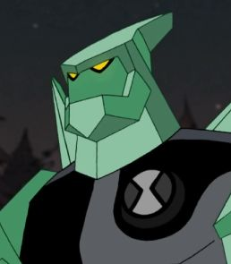

Diamante é um Petrosapien do planeta Petropia, uma criatura formada por cristais ultra-resistentes. Com a habilidade de criar armas e estruturas afiadas a partir de seu próprio corpo, ele é tanto um defensor impenetrável quanto um atacante cortante. Suas propriedades refletem energia e suportam ataques extremos, fazendo dele uma das formas mais resistentes do Omnitrix. Em combate, Diamante se adapta ao ambiente e protege seus aliados com sua muralha viva. Ele representa o equilíbrio entre força e proteção, e a ideia de que a verdadeira dureza vem de dentro.